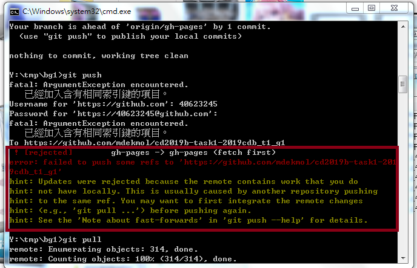

A：有些字元無法被讀取，讓系統無法偵測到進而變成亂碼讓網站整個壞掉。
解決方法：可以重新CLONE一次然後從還沒改之前再去做就可以了。
各頁面標題目前不支援特殊符號, 例如: "/", "?" 等, 若已經發生程式無法解讀頁面的情況, 只能從編輯 config/content.htm 下手, 若系統位於遠端, 則後續必須要再設法提供一個額外的編輯 config/content.htm 檔案的網際連結功能.
tinymce 中插入 video 的小視窗, 要移除引用的圖像與連結, 因為一般建議不要在內容中存入 .mp4 的影片資料, 而只接受引入影片 URL 連結.
重新Git pull 一次後，再重新推一次即可